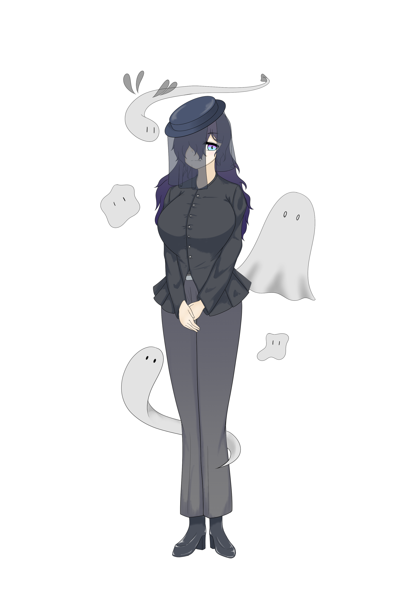

死語
SSR
属性：類型論
役割：サポーター
ポジション：後衛
ステータス
| HP | 2000 |
|---|---|
| 攻撃 | 500 |
| 防御 | 300 |
スキル
ノーマルスキル：消滅危機
敵単体の防御力を30%低下させ、自身の攻撃力の237%のダメージを与える。（CT30秒）
パッシブスキル：死して尚
HPが0になったとき、1回だけHPを200回復し、その後15秒間はHPが0にならない。
必殺スキル：世界から消え去っても
スキル発動時、最もHPの高い敵1体に「話者減少」を1個付与。以降25秒間、5秒ごとに同じ対象に「話者減少」を1個付与。
付与された「話者減少」が5個以上になったとき、対象に「絶滅」状態（攻撃力を72%低下、防御力を56%低下、移動速度を30%低下、回避無効化、弱体解除不能）を付与（13秒間）、全ての「話者減少」を解除。
スキル効果終了時、自身をスタン状態にする（4秒）
ボイス
| 加入 | 私は死語、ただの墓守よ……。「あの子たち」が安らかに眠れるよう、微力だけど協力させてもらうわね…… |
|---|---|
| 会話1 | シーッ、静かに……ほら、死んだ言葉たちの声に耳を澄ませて…… |
| 会話2 | どうしたの、学者さん？ 私を幽霊と見間違えた……？ ふふ、ちょっとした悪戯、成功ね。 |
| 会話3 | 学者さん、その服とってもナウでバッチグーだと思うわ。……やっぱり若い子との会話って難しいわね。 |
| 会話4 | |
| 宿舎1 | ここは活気に溢れているわね。 |
| 宿舎2 | |
| 宿舎3 | |
| レベルアップ1 | |
| レベルアップ2 | |
| レベルアップ3 | |
| 覚醒1 | |
| 覚醒2 | |
| 覚醒3 | |
| 編成 | あら、もう出発なのですか？ |
| 戦闘開始 | みんな、また力を貸してくれる？ |
| スキル1 | 眠りなさい |
| スキル2 | お許しください |
| スキル3 | 貴方もいずれ通る道よ |
| 必殺スキル1 | ひとーつ、ふたーつ…… |
| 必殺スキル2 | ごめんなさいね、騒がしいのは苦手なの |
| 必殺スキル3 | Memento mori. |
| 戦闘勝利 | 今はどうか安らかに…… |
| 戦闘敗北 | 今、そっちに行くわ……。 |
性能解説
対ボス特化のデバッファー。
必殺スキル「世界から消え去っても」は発動からデバフ付与までに時間がかかり、付与自体にも条件が発生するものの、それを補って余りあるほどのデバフを敵ボスに与えることができる。
デバフ付与の要である「話者減少」は発動時に1個付与され、その後の25秒間で5秒ごとに1個付与されるので、スキル中に6個付与されることになる。
デバフの付与には「話者減少」が5個必要なので、実質的にデバフが付与されるのはスキル使用から20秒後である。なお、「絶滅」状態の間は「話者減少」を受け付けなくなるので、発動から25秒目に付与されるはずの「話者減少」は無効になる。
「絶滅」状態は攻撃、防御、移動速度の3つを大きく減衰させるほか、この状態の敵が回避スキルを持っている場合、それを使用不能にする。これだけで十分破格なのだが、さらに弱体解除スキルも無効化してしまうという凶悪仕様。敵からすればたまったもんじゃない。
これでもかというくらいのデバフ特化の必殺スキルを持つが、その反動かデバフを付与する以外の特長はなく、むしろステータスはレベルマックスでもSSRサポーター中で最下位である。
辛うじてパッシブスキルでHPが0になっても15秒間持ちこたえることはできるが、そもそもの防御力やHP上限が低いのであまりアテにするべきではないため、結果的には抱合語など、強力なヒーラーとのセット運用が前提になる。
要約すると、類を見ないほど強力なデバフを付与できるが、付与までに時間がかかるため、先を見越したスキルの発動タイミングと、デバフ付与前に死んでしまわないようにする立ち回りが重要になってくる。
復習大決戦などのボス戦コンテンツで上位を目指すなら必須級なので、入手できた学者さんは育ててみる価値はあるだろう。
なお、彼女が実装されたメインシナリオ7章のボス戦では、NPCとして特殊なバフを所持した彼女が編成可能になる。
このバフによって、素のステータスの低さがかなり底上げされており、なおかつスキル自体が7章ボスと非常に相性がいいため、NPCを編成した方が圧倒的に容易に攻略できる。
小ネタ
小ネタを書く